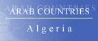

![Algeria - Democratic and Popular Republic of Algeria.
Al Jumhuriyah al Jaza'iriyah ad Dimuqratiyah ash Shabiyah - [Al Jaza'ir]](dzf.gif)
The Country & People of Algeria
This page contains links to sites in Algeria and Algeria related sites.
For Middle East, North Africa, Arab and regional information visit Arab Countries
Hints:
- Use the "FIND" function in the Edit menu of your browser to search the page
- Use translating services in Chrome or Bing Bar in Internet Explorer to view page and/or linked websites in your language
General Info
* Business
* Culture
* Education
* History
* Media
* Organizations
* Travel
* Gateways
* Arab Countries
Algeria, Arab. Al Djazair, Fr. Algerie, officially People's Democratic Republic of Algeria, republic (2005 est. pop. 32,532,000), 919,590 sq mi (2,381,741 sq km), NW Africa, bordered by Mauritania, Morocco, and Western Sahara (W), the Mediterranean Sea (N), Tunisia and Libya (E), and Niger and Mali (S). The principal cities are Algiers (the capital) and Oran. The Atlas Mountains divide northern Algeria into a coastal lowland strip (the Tell) and a semiarid plateau. In the south is the much larger, but arid and sparsely populated, Saharan region; Algeria's highest point, Mt. Tahat (9,541 ft/2,908 m), in the Ahaggar Mts., is located here. About a quarter of Algeria's workforce are farmers, producing cereals, wine, citrus fruits, and cork. Mining and manufacturing, developed since the 1960s, contribute the bulk of the national income. Petroleum is the leading export, and much natural gas is produced, with proven reserves that are among the world's largest. The state plays a leading role in planning the economy and owns many important industrial concerns, but a 1994 law permitted privatization of some state firms.
Algeria is divided into 48 wilayas, or provinces. In addition to the capital, major cities include Annaba, Blida, Constantine, Mostaganem, Oran, Sétif, Sidi-bel-Abbès, Skikda, and Tlemcen. The great majority of Algeria’s inhabitants are of Arab-Berber descent; the Berbers, beginning in the late 7th cent. A.D., adopted the Arabic language and Islam from the small number of Arabs who settled in the country. Relations between Arabic-speaking and Berber-speaking Algerians have been marked by tension since Arabic was made the sole national language (1980); that policy was reversed in 2002, when Tamazight, a Berber tongue, was also recognized as a national language. Also French is widely spoken..
History
The earliest known inhabitants of the region that is now Algeria were Berber-speaking nomads who were settled there by the 2d millennium BC As Numidia, it became (9th cent. BC) a province of Carthage and then (106 BC) of Rome; during the Christian era, St. was bishop at Hippo (now Annaba). With Rome's decline in the 5th cent. AD, Algeria was conquered by the Vandals (430–31), the Byzantine Empire (6th cent.), and finally, in the late 7th and early 8th cent., by the Arabs, whose introduction of Islam profoundly altered the character of the area.
Spain captured the coastal cities in the 15th cent. but was expelled (mid-16th cent.) with the help of the Ottoman Turks, who assumed control. During this period the Algerian coast was a stronghold of pirates and a center of the slave trade. France invaded Algeria in 1830 and declared it a colony in 1848. Europeans began to arrive in large numbers, dominating the government and the economy, and leaving the native Muslim population with scant political or economic power.
A nationalist movement began to develop after World War I, and a war for independence, led by the National Liberation Front (FLN), broke out in 1954. After more than seven years of bitter fighting, in which at least 100,000 Muslim and 10,000 French soldiers were killed, Algeria became independent on July 3, 1962.
Since independence, Algeria has been a prominent nonaligned state and a champion of the movements against white minority rule in Africa. It also has supported the protracted struggle of the Polisario Front for the independence of Western Sahara (formerly Spanish Sahara) from Morocco. Ahmed Ben Bella, prime minister and then president of Algeria after independence, was deposed by Houari Boumedienne in 1965. After Boumedienne's death (1978), Chadli Benjedid succeeded (1979) him as president. Riots in 1988 led Pres. Benjedid to reduce the role of the state economically and of the FLN politically.
After Islamic fundamentalists won 42% of the seats in the first round of parliamentary elections in Dec. 1991, the army forced Benjedid to resign (1992) and canceled the election. A civilian-led state council was installed, but real power resided with the army. The fundamentalist party was banned and its leaders arrested. Fundamentalists launched a guerrilla insurrection, and Algeria was torn by violence from both sides.
In 1994 Gen. Liamine Zeroual, the defense minister, was appointed president, replacing the state council; he won a presidential election the following year. Zeroual resigned early in 1999 and presidential elections held in Apr., 1999, were won by Abdelaziz Bouteflika, the candidate of the military oligarchy; the opposition candidates had withdrawn before the vote. One of the main guerrilla groups renounced its struggle against the government in June 1999; however, other groups continued to wage war. By mid-1999, 100,000 people had been killed in the violence and repression that began in 1992.
Under an amnesty approved in Sept. 1999, 80% of the Islamic guerrillas surrendered to the government by the mid-Jan. 2000 deadline, and the violence has since greatly diminished. The easing of the fighting has brought such issues as government corruption and widespread poverty and unemployment (estimated at 30%) to the fore.
In addition, in 2001 there were large demonstrations and clashes with police by Berbers, who remained deeply unhappy about Arabic’s status as the sole national language, a policy that was reversed the following year. Berber protests also sparked demonstrations against the country’s stagnant economy by non-Berber Algerians. Parliamentary elections in May, 2002, were boycotted by a number of major opposition parties and many voters, and the FLN won more than half the seats.
French president Jacques Chirac made a state visit to Algeria in Mar., 2003; it was the first such visit since Algerian independence. Two months later a strong earthquake devastated many towns east of the capital, killing more than 2,200 people. The ineffective official response to the disaster led to public outrage and widespread criticism of the government. Late in 2003, tensions between the president and Ali Benflis, the FLN party leader and a former prime minister, led to a split in the government and within the party.
Bouteflika was returned to office in Apr., 2004, in an election that observers called Algeria’s fairest to date, but the vote for Bouteflika (83%) led Benflis, his main opponent, to accuse the government of massive fraud.
In 2005 the government reached an agreement with Berber leaders that promised economic aid and greater recognition of the Berber language and culture, but many of the details were not finalized. Voters approved a government national reconciliation plan that would provide amnesty for many Islamic insurgents and government security forces and compensate the families of persons killed in the insurgency. The plan, which was criticized by human-rights groups for absolving government forces of their involvement in extrajudicial killings, came into effect in 2006. At the same time, Algeria’s remaining Islamic fundamentalist guerrillas, while largely confined to more remote mountain and desert regions, have continued to mount attacks against the government and have sought to expand their influence through training non-Algerian Islamists and recruiting fighters for non-Algerian conflicts from among Muslims in Europe and elsewhere outside Algeria. The main fundamentalist guerrilla group also officially aligned itself with Al Qaeda.
In Dec., 2007, mounted bombings against government and UN buildings in Algiers. Bombings, some of them significant, and other attacks continued into 2009.
The May, 2007, parliamentary elections were won by the FLN-led governing coalition, whose three parties secured nearly two thirds of the seats. Turnout was light, however, with a little more than a third of the voters going to the polls, and some parties boycotted or were banned from the campaign.
In Nov., 2008, parliament ended presidential term limits, enabling Bouteflika to run for a third term in 2009.
In Apr., 2009, the president was reelected with 90% of the vote; although the election was boycotted by some opposition parties, the goverment said there was a 74% turnout.
In Jan., 2011, protests overs food prices soon turned into protests demanding political reforms, paralleling those in other Arab nations. They continued in subsequent weeks, but after the government in February ended the state of emergency dated to the military takeover in 1992, the protests dwindled. In April, the president promised to enact democratic constitutional and legal reforms. Elections for the parliament in May, 2012, resulted in a significant majority for the FLN-led government, but opposition parties denounced the result, and turnout appeared to be much lighter than the 42% announced by the government.
Bouteflika, despite significant health problems, won a fourth term as president in Apr., 2014; turnout was reported at nearly 52%, with more than 81% voting for the president. Several candidates withdrew from the race after Bouteflika announced he would run; his main opponent, a former ally, alleged the voting was affected by serious irregularities. By late 2015 Bouteflika's sequestration from public life and from some former associates had created divisions in the leadership of the country and resulted in accusations that the president's brother and a clique associated with him was running Algeria.
********
Copyright (c) 2012 Columbia University Press.
Used by permission of Columbia University Press.
General Info
Cities, towns, municipalities, places, flag, maps, useful Information....
Business
Economy, reports, statistics, banks, directories, jobs, investment, promotion....
Culture
General resources, heritage, art, literature, photography, cinema, music, song, dance, cultural, scientific,
environmental, sporting entities & info....
Education
Schools, colleges, academies, universities, polytechnics, institutions, research, resources, projects....
History
Ancient & modern history, human rights, politics & political parties, related sites, articles....
Media
Newspapers, magazines, news, newsletters, news agencies, radio, TV, internet, articles, reports, cartoons....
Organizations
Government, ministries, overseas missions, embassies, corporations, organizations, industrial entities, centers,
public hospitals, institutions, societies, foreign entities....
Travel
Airlines, air, sea & coach charters services, travel, tours, guides, hotels, resorts, inns, hostels, health,
travel tips, weather....
Gateways
Gateways, search engines and directories to country related sites and information....
Arab Countries
Arab World: Middle East, North Africa, Arab and regional information. Resources to other Arab countries....
About Algeria
General Information Also see Travel
- Algerie Mon beau pays perdu!
- Algerien History, country, population....
- All Referer Earth & environment, history, literature & arts, people, places, plants & animals, religion, science & technology, sports & everyday life
- ArabInfo Overview, government, history, links
- ArabNet Overview, history, geography, business, culture, government, transport, tour guide, links
- Atlapedia Geography, climate, people, demography, religion, education, modern history, currency, other information....
- BBC Country Profile Key facts, figures and dates
- Britannica.Com Country info, land, people, economy, society, government, history, culture, maps, statistics, links....
- CIA World Factbook Map, geography, people, government, economy, communications, transportation, military, issues
- Country Reports Economy, defense, geography, government, people, anthem, map, news, weather, links....
- Encarta OnLine Info, land & resources, population, economy, government, history, other related items, links....
- Encyclopaedia of the Orient Geography, politics, economy, health, education, religion, people, history, anthem, cities....
- Expedia Almanac, fast facts, communications, on business, health & safety, transportation, traveler's directory
- Info Please General info, map, geography, government, history, land & people....
- Nation By Nation Info, government, human rights, news, geography, history, people, links....
- US Library of Congress Everything you ever wanted to know about Algeria....
- World66 General info, cities, history, people, economy, getting around, getting there, links....
Cities, Towns, Municipalities & Places
- Boussemghoun The Ksar, photos, Other Algerian towns....
- Constantine Ou cirta est une ville digne d'être classee parmi les merveilles du monde
- Misserghin Vous trouverez ici l'histoire du Village et de ses Habitants
- M'Zab Architecture, Institutions, Mozabite women, photos....
- Tebessa L'antique Theveste, importante ville romaine
- World Heritage Cities Kasbah of Algiers - A tight network of narrow and tortuous streets and lanes
- World Heritage Cities MZab Valley - Each of the villages is laid out in a series of concentric circles extending from the mosque to the ramparts
- World Monuments Endangered sites: Tipasa ou Parcs Archeologiques
Flag, Maps, Emblems and other information....
- Cellular News Cellular coverage map, systems, frequencies....
- Ethnologue Languages
- Flag Description, meaning, history, interesting facts
- Flag Explanation, historical, military & political flags, subdivisions, national emblem....
- Maps on the internet All types of maps from different sources
- World Atlas A brief description, fast facts, flag, landforms, maps, traveller info, weather
- World Clock Local time, sunrise, sunset, GMT offset, daylight saving....
- World Paper Money Paper currency since 1924
General Info
* Business
* Culture
* Education
* History
* Media
* Organizations
* Travel
* Gateways
* Arab Countries
Business and Economy
General, Economy, Reports & Statistics
- Algeria and the IMF Position in the fund, reports....
- Algerian Chamber of Commerce and Industry Advise on conventions and trade agreements linking Algeria to foreign countrie
- Australian Department of Foreign Affairs and Trade Fact sheet (pdf) & travel information....
- Bilateral Relations with Japan Diplomatic, investment, economic cooperation, residents....
- Business-dz Market watch, currency, tenders, economic news....
- MBendi Business information, news, industries, events
- Muslim Trade Network Trade reference directory and guide....
- Organization of the Petroleum Exporting Countries - OPEC Statistics....
- Ports Focus Ports, harbours, marinas....
- US Department of Energy Analysis, information, oil, natural gas, coal, electricity....
- US Department of State Country reports on economic policy and trade practices - 1999
- World Bank
Overview, news & events, data & statistics, publications & reports, development topics, projects & programs, Public Information Center
Banks
- Al Baraka Bank of Algeria
General mission to contribute to the development of the economic activity in Algeria
- Arab Banking Corporation
Offers various customized banking services to professional clients
- Banque d'Algerie
- Banque Commercial et Industrielle d'Algerie
- Union Bank Investment Banking
Directories, Job Opportunities
Investment & Promotion....
- Bejaia Port Enterprise, history, photos....
- FINALEP The first capital corporation investment in Algeria
General Info
* Business
* Culture
* Education
* History
* Media
* Organizations
* Travel
* Gateways
* Arab Countries
Art, Culture & Sport
General resources, Heritage....
- Cuisine-DZ La reference de la gastronomie algerienne
- Musee National des Antiquites
- Musee de Tipasa
Art, Literature, Photography, Cinema....
- Abou Al-Yakdan Journalist, scholar, author and poet
- Hamidouche Galerie Paintings by Layachi Hamidouche
- Mzab Photos Mosques, minarets, ramparts and towers
- Patio of the Lost Land Theatre
- Paysage Algerie A beautiful collection of pictures of the cities and the villages of Algeria
- Photos of Algeria Sea, complex, sahara, mountains
- Arab Film Distribution - Algeria Features a wide range of narrative films, documentaries, visual essays and ethnographic films
- Internet Movie Database Movie & TV reports
Music, Song & Dance....
- Abdelkader Saadoun Algerian King of Rai in the UK
- Cheb i Sabbah Music, shows, press
- Cheb Khaled King of Rai Music - Unofficial website
- Rachid Taha Few important things, discography, biography, CDs and/or videos - Unofficial website
- Souad Massi A talented and courageous guitarist and vocalist
Cultural, Scientific, Environmental, Sporting Entities & Info
- Sirius Astronomy Association The first Algerian scientific /astronomical /cultural site based in Algeria
- Animal Info Threatened species, environmental and social data
- AquaStat Information on quantity and quality of freshwater and its availability
- National Observatory for Environment and Sustainable Development (ONEDD)
Establishing and managing networks of observation and measurement of pollution and monitoring , natural environments
- Water Resources and Activities Water-management initiatives
- Federation Algerienne de Football History, administration, meetings, events, results, photographs....
- Mouloudia Club Football - Oran
- Sahara Marathon This is your chance to take a week of your life
General Info
* Business
* Culture
* Education
* History
* Media
* Organizations
* Travel
* Gateways
* Arab Countries
Education
Schools, Colleges, Academies, Universities & Polytechnics
- Ecole Militaire Polytechnique
- L'Ets SALIM Rouiba
- Universite Abou Bekr Belkaid Tlemcen
- Universite d'Alger
- Universite Badji Mokhtar Annaba Graduation in various fields of water sciences and techniques
- Universite de Batna
- Universite de Bouira
- Universite Djillali Liabes
- Universite de la Formation Continue
- Universite de Jijel
- Universite Kasdi Merbah Ouargla University in the big south of Algeria
- Universite M'hamed BOUGARA de Boumerdes Four Technological faculties including 23 departments
- Universite Mentouri Constantine
- Universite de Mostaganem
- University of Islamic Sciences Emir Abdelkader Train students for an islamic/ scientific education
- Centre Nationale de l'Enseignement Professionnel a Distance CNEPD National center distance education of professions
- WorldWide Classroom University & adult education, K12 & teen....
Institutions & Organizations
- Agence Nationale pour le Developpement de la Recherche Universitaire
- Centre de Developpement des Technologies Avancees
- Centre de Recherche en Anthropologie Sociale et Culturelle
- Institut de Developpement des Grandes Cultures
- Institut de Formation
Research, Resources & Projects
A directory of Algerian experts and competencies in all scientific and technical domains
- Research Centre for Scientific & Technical Information
- Universal Clock A Universal, luni-solar, semi-centennial calendar model with the week of six days!
General Info
* Business
* Culture
* Education
* History
* Media
* Organizations
* Travel
* Gateways
* Arab Countries
History, Human Right & Politics
Ancient & Modern....
- Abdelaziz Bouteflika Le site President de la Republique
- BBC Timeline A chronology of key events
- Memoires d'Algerie Un lieu de publication de documents historiques, d'archives, et de temoignages sur l'Algerie
- Political Geography Land and people, economy, government, history....
- World Statesmen Flags, chronology, rulers, governors, ministers, commissioners....
Human Rights, Politics & Political Parties....
- Algeria Watch
- Amnesty International News, reports, urgent action. Latest annual report....
- Human Rights Watch Human rights developments & report
- US Department of State Country reports on human rights practices
- High Islamic Committee Dealing with social & cultural problems
- Mouvement Democratique et Social Le combat contre l'integrisme et son aile armee le terrorisme
- Rassemblement pour la Culture et la Democratie Parti politique, biographie du Dr Said Sadi
Related Sites, Articles....
- Constitution Background, history & news
General Info
* Business
* Culture
* Education
* History
* Media
* Organizations
* Travel
* Gateways
* Arab Countries
Visit Arab Media for satellite stations & Arab newspapers
Media
Newspapers, Magazines....
- El-Heddaf Weekly sport newspaper
- El-Khabar Daily newspaper
- El-Moudjahid La revolution par le peuple et pour le peuple
- El-Chaab Daily newspaper
- El-Watan Le qoutidien independant
- Horizons Qoutidien National D'information
- Kabyle Le premier magazine en ligne du peuple kabyle
- La Tribune L'autre regard sur l'info....
- Le Matin
- Le Quotidien d'Oran Edition nationale d'information
- Le Soir d'Algerie Qoutidien independant
- Liberte Le droit de savoir, le devoir d'informer
OnLine News, Newsletters, News agencies....
- Actualite Culture, Economy, Education, Health, History, International, Job, Music, News, Politique, Real Estat, Science, Sport, Telecom
- Agence Algerienne d'Information (AAI) Agence de presse privee specialisee en information economiques et sociales
- Algeria Events Latest news from Algeria, business, sci/tech, sports, economy, national, world news
- Algerie Info Presse Algerienne....
- Algeria Interface News, focus, profiles, archives, politics, business....
- Algerian News Agency News, week in review, business, magazine....
- AllAfrica.Com News plus, news wire....
- Sante-Dz Algerian Medical News, health and medicine
- Washington Post News & references
- Wissal Online news, economy, sport, culture, family....
- Yahoo full news coverage
Radio, TV, Internet....
- Algerian TV Live TV....
Articles, Reports, Cartoons....
General Info
* Business
* Culture
* Education
* History
* Media
* Organizations
* Travel
* Gateways
* Arab Countries
Visit Arab Organizations for Pan-Arab, Middle East, North Africa and regional organizations
Government & Organizations, Corporations, Societies....
Government, Ministries, Councils....
- Chiefs of State and Cabinet Members
- Political Leaders Dates and figures of the leadership since 1962 (with pictures)
- Autorite de Regulation de la Poste et des Telecommunications
- Centre de Developpement des Energies Renouvelables
- Conseil de la Nation
- Court of Auditors In charge of public purses, community territorial and publicly-owned establishments
- Economic and Social National Council To evaluate and study all questions relating to the economic and social development....
- Institution des Archives Nationales
- Ministere de l'Amenagement du Territoire et de l'Environnement
- Ministere du Commerce
- Ministere de l'Energie et des Mines
- Ministere des Finances
- Ministry of Foreign Affairs
- Ministere de la Formation et de l'Enseignement Professionnels
- Ministere de l’Habitat et l’Urbanisme
- Ministere de la Peche et des Ressources Halieutiques
- Ministere des Postes et Telecommunications La Poste
- Ministere des Ressources en Eau
- Ministry of Social Action and National Solidarity
Aiming at the reduction of the social fracture and a right distribution of the wealth
- Ministere de la Solidarite Nationale et de la Famille
- Ministere des Transports
- National Office of Statistics Statistical tables in social and economical topics
- National People's Assembly Roles and functions, history, constitution
- Office National de la Meteorologie
- Sante-Algerie Official portal of the Ministry of Health, Population and Hospital Reformation
- Services du Chef du Gouvernement
- Algerian Consulate - London, UK Embassy, Visa travel information, Country profile, Algerian citizens affairs....
- Embassy of Algeria - Jakarta, Indonisia Information, economy, consular section, news, links....
- Embassy of Algeria - Lisbon, Portugal
- Embassy of Algeria - Ottowa, Canada Algeria, economy, institutions, consular affairs, media, relations....
- Embassy of Algeria - Prague, Czech Republic
- Embassy of Algeria - Seoul, Korea The information provided will help you get better acquainted with Algeria
- Embassy of Algeria - Washington, USA Information, economy, consular section, news, links....
- Permanent Mission to UN Algeria info, its foreign policy and its activities....
- Permanent Mission to the United Nations - Geneva
- Wilaya de Ain Temouchent
Corporations, Organizations, Industrial Entities and Public Hospitals
- Algerian Energy Company Energy from Synergy
- Algiers Harbour Company An indispensable platform for any economic exchange
- BATICIM The Industrialized Steel Structure Constructions Company
- National Company of Gold Exploration ENOR - Algerian Jointed Stock Company
- Port of Bejaia Storage capacity and adaptable to diverse customer needs
- Salgetel Telecommunication products and services
- Sonatrach The Algerian oil and gas company
Centers, Institutions, Societies....
- Centre National d'Etudes et d'Analyses pour la Planification
- Centre National du Registre du Commerce Une institution administrative autonome....
- Centre de Recherches Scientifiques et Techniques sur les Regions Arides To study better the problems of aridity and desertification....
- El-Rassed Association des Sciences et d'Astronomie
Foreign Entities
- Ambassade de Russie, Alger Embassy of Russia, Algiers
- United Nations Le Programme des Nations Unies pour le developpement
- World Food Programme Fight against global hunger....
- World Health Organization Tobacco & health, socio-economic situation
General Info
* Business
* Culture
* Education
* History
* Media
* Organizations
* Travel
* Gateways
* Arab Countries
Travel & Tourism
Airlines, Air, Sea & Coach Charters services
- Aigle Azur Schedules, reservation, tarif....
- Air Algerie Schedules, agencies, reservation, FAQ....
- Algerie Ferries
Travel, Tours, Guides.... More country info
- Nat-Dz Adventures in the desert
- Sky One Travel Saint Augustine, Numedia & Roman tours, Sahara, Oasis, Kabylie and World Heritage tours
- Adventures of Algeria Getting there & costs, safety & health, visa, climate, cities, holidays....
- Africa Guide Introduction, visitor info, accommodation, tours....
- Lonely Planet Travel information
- Travel Guide General & trave info, money, duty free, health, accommodation, visas....
- World Travel Directory Travel information, regions & places....
Hotels, Resorts, Inns, Hostels....
- Hilton Algiers Algiers
- Hôtel de l'Aéroport 5 minutes from the International Airport "Houari Boumediene"
- Sidi Fredj Hotels Located on a peninsula, in the district of Staoueli, Algiers
- All Hotels Hotels, description & rates
- Hostels Addresses & location
Health & Travel Tips
- Foreign & Commonwealth Office Travel information, country advise, latest travel updates....
- Travel Document Systems Passports, visas, travel documents
- US Consular Information Warning, visa, security, health, crime/drug penalties....
Weather....
- Weather Underground Temperature, humidity, pressure and conditions by city
- Yahoo Weather By city. Forcast, sunrise, sunset, humidity, wind, dewpoint....
General Info
* Business
* Culture
* Education
* History
* Media
* Organizations
* Travel
* Gateways
* Arab Countries
Visit Arab Gateways for Arab and other country links
Gateways to Algeria
- Algeria.Com Your guide to Algeria....
- AlgeriaInfo Info, gateway & media....
- AlgerieSite Algerian related sites
- BestAlgeria Gateway....
- ElDjazair Gateway....
- WebAlgerie Gateway, search, chat, services....
- Webguide-Algerie Directory and Guides
General Info
* Business
* Culture
* Education
* History
* Media
* Organizations
* Travel
* Gateways
* Arab Countries
Please link to this page.
https://www.hejleh.com/countries/algeria.html
For comments, reports of deadlinks and adding your URL
Names, pictures and logos are the copyright of their respective owners.
(C)Copyright 1998-2017 Mazen Hejleh. All rights reserved.